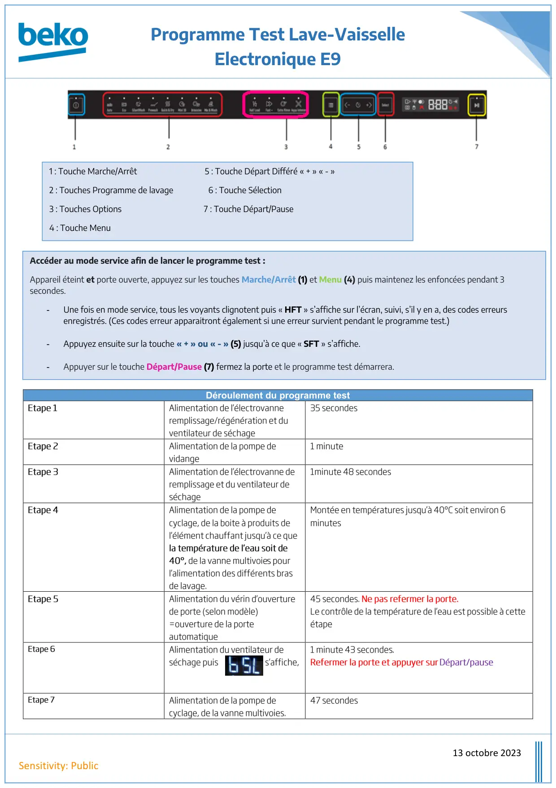
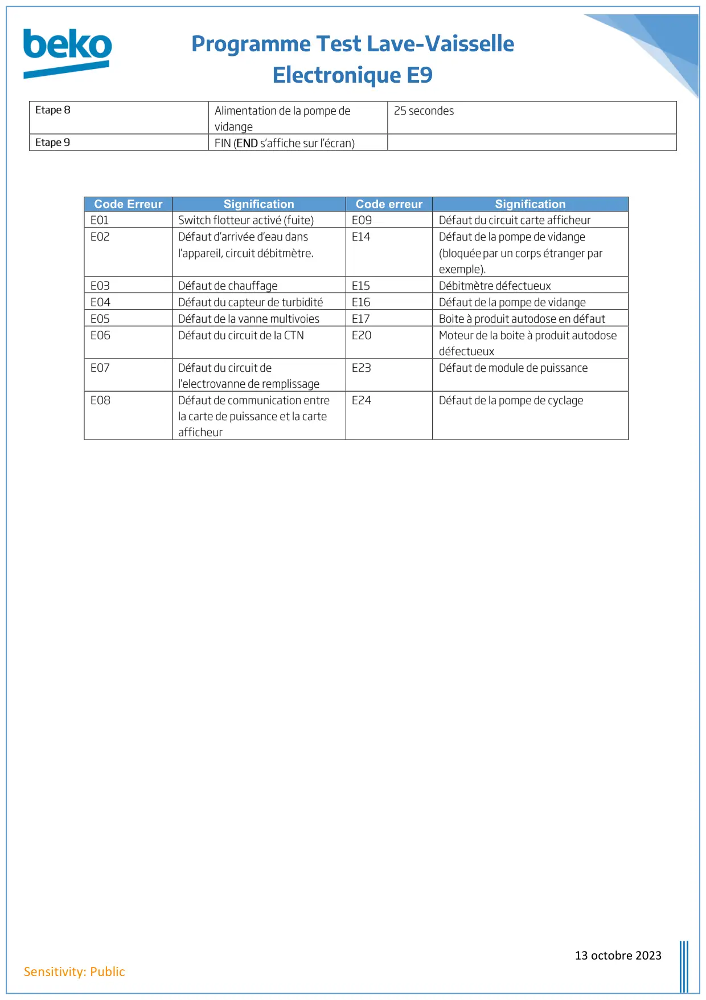

ProgTest lave vaisselle Electronique E9

Programme Test Lave-VaisselleElectronique E913 octobre 2023Sensitivity: PublicDéroulement du programme testEtape 1Alimentation de l’électrovanneremplissage/régénération et duventilateur de séchage35 secondesEtape 2Alimentation de la pompe devidange1 minuteEtape 3Alimentation de l’électrovanne deremplissage et du ventilateur deséchage1minute 48 secondesEtape 4Alimentation de la pompe decyclage, de la boite à produits del’élément chauffant jusqu’à ce quela température de l’eau soit de40°,de la vanne multivoiespourl’alimentation des différents brasde lavage.Montée en températures jusqu’à 40°C soit environ 6minutesEtape 5Alimentation du vérin d’ouverturede porte (selon modèle)=ouverture de la porteautomatique45 secondes.Ne pas refermer la porte.Le contrôle de la température de l’eau est possible à cetteétapeEtape 6Alimentation du ventilateur deséchage puiss’affiche,1 minute 43 secondes.Refermer la porte et appuyer surDépart/pauseEtape 7Alimentation de la pompe decyclage, de la vanne multivoies.47 secondes1 : Touche Marche/Arrêt 5 : Touche Départ Différé « + » « - »2 : Touches Programme de lavage 6 : Touche Sélection3 : Touches Options 7 : Touche Départ/Pause4 : Touche MenuAccéder au mode service afin de lancer le programme test :Appareil éteint et porte ouverte, appuyez sur les touches Marche/Arrêt (1) et Menu (4) puis maintenez les enfoncées pendant 3secondes.-Une fois en mode service, tous les voyants clignotent puis « HFT » s’affiche sur l’écran, suivi, s’il y en a, des codes erreursenregistrés. (Ces codes erreur apparaitront également si une erreur survient pendant le programme test.)-Appuyez ensuite sur la touche « + » ou « - » (5) jusqu’à ce que « SFT » s’affiche.-Appuyer sur le touche Départ/Pause (7) fermez la porte et le programme test démarrera.
1 / 2
Programme Test Lave-VaisselleElectronique E913 octobre 2023Sensitivity: PublicEtape 8Alimentation de la pompe devidange25 secondesEtape 9FIN (ENDs’affiche sur l’écran)Code ErreurSignificationCode erreurSignificationE01Switch flotteur activé (fuite)E09Défaut du circuit carte afficheurE02Défaut d’arrivée d’eau dansl’appareil, circuit débitmètre.E14Défaut de la pompe de vidange(bloquéepar un corps étranger parexemple).E03Défaut de chauffageE15Débitmètre défectueuxE04Défaut du capteur de turbiditéE16Défaut de la pompe de vidangeE05Défaut de la vanne multivoiesE17Boite à produit autodose en défautE06Défaut du circuit de la CTNE20Moteur de la boite à produit autodosedéfectueuxE07Défaut du circuit del’electrovanne de remplissageE23Défaut de module de puissanceE08Défaut de communication entrela carte de puissance et la carteafficheurE24Défaut de la pompe de cyclage
2 / 2